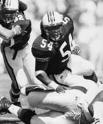

Haven FieldsLinebacker
Growing up in a tough neighborhood in Miami, Fla., can be a rough experience. However, when you stay out of trouble and have someone to look up to, life can be much easier, which is just what senior linebacker Haven Fields did. "My mom disciplined me real well when I was younger," Fields said. "She stayed on me for the little things sort of like you hear in football. She always wanted me to do right. She raised me by herself and I am sure things got tough for her. She was my mother and my father, and she did a good job of raising me." As a child, Fields stayed close to home when looking for inspiration and guidance. Unlike many other children who looked up to the likes of Joe Montana or Lawrence Taylor, Fields looked to his mother, Henrietta Mitchell, as his role model. "My mom was everything to me when I was a kid," Fields said. "She raised both my sister and me by herself, which taught me a lot. My Uncle Ricky also stayed on me, and taught me things about being a man. My grandfather was also very influential in my life. He was a very wise man. They all just kept me out of trouble." Fields' mother played a great part in paving the way for Fields rise to the top, and is also a big fan of football. She is a regular attendee of games in Jordan-Hare Stadium and has also grown to understand the game. "She has grown to love the fact that I am playing ball," Fields said. "She has started to understand the game, especially since my step-father likes it." Fields interest in football began at an early age. At the time when most kids are playing with G.I. Joes and race cars, Fields turned his attention to the football field. He began playing as a six-year-old and has never looked back, even though he never thought he would be where he is now. "I started playing when I was around six years old on the little junior varsity and 65-pound teams," Fields said. "I don't really know what started me playing. We used to play street ball all the time, but when I went to this one camp they had a team. I told my mom that I wanted to try and start playing, so she signed me up and since that day I have been playing. Playing college football was something I didn't really think about back then." Fields career progressed as he got older and when he got to junior high and high school, he began to realize that he could make it in the sport of football and possibly play at the next level. "When I started getting to junior high and high school I began to wonder if I would ever get to play college ball," Fields said. "That dream came true. I love Auburn and I am having a great time here. It's a nice place to be with a lot of friendly people. I have met some good friends at Auburn and it has been extremely good to me." Palmetto High School in Miami, Fla. is where Fields got his big break. As a senior, he was named the seventh best outside linebacker in the South by Pigskin Preps. He was also a talented basketball player in high school. "High school was a lot of fun, especially the football aspect," Fields said. "Going out on Friday nights and playing was a great experience. Markeith Cooper (Auburn wide receiver) was on my high school team. He played offense and I played defense, so we went against each other a lot in practice. His locker was right next to mine, too.  I thought that Markeith was going to go to another school, so we never really talked about coming to Auburn," Fields said. "When I found out that he was coming to Auburn it made me happy because somebody would be coming here that I knew. I didn't know a whole lot of people here, so I was glad that he came." Fields was highly recruited out of high school by many top Division-IA schools. Purdue, Kentucky, Northwestern, Florida State and Pittsburgh wanted Fields wearing their colors on Saturdays. However, he chose Auburn because it seemed right in his heart to come to the Plains. "Out of all the schools that I went to, Auburn just seemed to be the best place for me to go to," Fields said. "I prayed about all my visits and where I should be and Auburn is what came to me." It took a last minute visit to Auburn for Fields to make his decision to come to the Plains. After taking all his official visits, he came to Auburn on an unofficial visit the weekend before Signing Day and fell in love with the town. "I was leaning heavily towards another school, and then I came to visit Auburn," Fields said. "It was a last minute thing, but I came up here and really liked the campus. I saw all the fans and I liked it. It's been a really nice experience." He has taken advantage of his time in Auburn. Already this year, Fields is second on the team in total tackles with 69 and leads the team in unassisted tackles with 40 and tackles for a loss with nine. Last season as a junior, the high school All-American played a vital role in the Tiger's special teams as well as a solid backup at linebacker. He recorded nine tackles and an interception against rival Georgia last season. After all these years and the chances to meet new people and new influences, Fields still goes back to his mother for inspiration. "My mom is still my greatest influence, she has been my guide. I talk to her almost every night," Fields said. "Here in Auburn my counselor Troy Smith has helped out a lot. He gives me some good advice. Coach Whitt (Auburn's linebackers coach) is good to listen to and he has been a great help. I feel good about what he is doing and that he gave me a chance to play." Coach Whitt is the lone assistant coach who remained after last season and that gave Fields something to look forward to for this season. "It made me feel real good knowing that he was going to be back. At first we didn't know if he was going to be a coach," Fields said. "When he found out, he gave me a call to let me know and he said 'If we are going to do it, we are going to do it right.' I am just glad to be able to be coached by him." Fields is a senior in rehabilitation services and plans on graduating from Auburn University in the fall of 2000. He would like to continue his education after receiving his bachelor's degree by going to graduate school to get a degree in physical therapy.
What is one thing you would change about your time here at Auburn?
If you were not playing would you want to be a fan, trainer or manager?
During a game, which drink do you prefer, water or Gatorade?
© 1999 Auburn Network, Inc. |